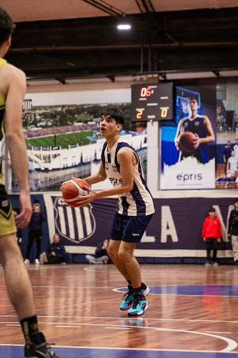
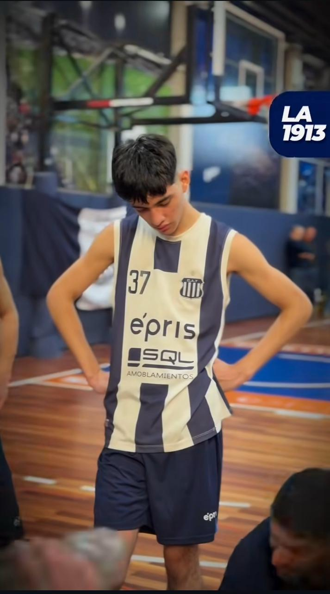

PLANILLA DE JUEGO
Lo que hice en cada club
Nacimiento
Arranco a jugar en Hindú
A los 4 años, mis primeros pasos en el básquet.
Dejo Hindú
Me voy después de 11 años. 2 títulos en el club de mi infancia.
Me voy a Racing
Salto a primera categoría y primer provincial.
Me voy de Racing
Dejo el club donde viví las mejores experiencias.
Talleres
Me voy a Talleres por la pasión que le tengo.
Talleres
Sigo jugando, hasta hoy.
Hindú Club
11 AÑOSEn este club empecé mi carrera como basquetbolista y viví 11 años en este club, y fueron los mejores 11 años de mi vida. Hice muchos amigos, saqué muchas técnicas y mejoré mi estilo de juego, además de aprender cómo formarme para ser el mejor en cada club en el que esté, y también lo bueno es que gané 2 títulos con el club de mi infancia.
Racing Club
1 AÑOEn este club fue mi primera experiencia jugando en la primera categoría de la liga de Córdoba, y me ayudó a ser más responsable a la hora de ir a entrenar y exigirme el doble, porque la categoría te lo pide, y a sacar técnicas para que otros clubes me vieran. También jugué mi primer provincial, que fue lo que me dejó con ganas de volver a jugar. Pero lo malo es que estuve muy poco tiempo y no pude aprovechar Racing Club para fortalecer mi juego al máximo, y también me fui por algunos problemas.



Talleres
1 AÑOEn este club hace 1 año que estoy jugando, y lo elegí porque desde los 4 años soy hincha por mi viejo, y también porque vi cómo el club iba mejorando. También por los objetivos que tienen, que de a poco los estamos superando, y por lo unidos que son en ese club. Lo que me gusta es que cada día el club crece y yo crezco con él. Espero no dejarlo nunca, pero si algún día lo hago, lo voy a hacer feliz, porque aporté en ese club todo lo que pude y los ayudé a cumplir sus objetivos.